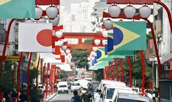

São Paulo tem a maior colônia japonesa fora do Japão
Entre seus mais de 12 milhões de habitantes, São Paulo tem por volta de 293 mil imigrantes, de acordo com a Polícia Federal. Entre eles estão portugueses, italianos, japoneses, coreanos e libaneses.
Alguns bairros, por exemplo, têm sua história diretamente marcada pela presença de imigrantes: o Brás, a Mooca e o Belenzinho têm forte presença de italianos; os judeus estão majoritariamente no bairro de Higienópolis; e os japoneses se concentram na Liberdade, sediando a maior colônia japonesa do mundo fora do Japão.
Paulistanos consomem mais de 700 pizzas por minuto
São Paulo é a segunda cidade que mais consome pizza no mundo, ficando atrás somente de Nova Iorque. Os paulistanos consomem mais de 700 pizzas por minuto, segundo dados do São Paulo Convention & Visitors Bureau!
A capital mundial dos helicópteros
No mundo existem mais de 50 mil helicópteros utilizados para fins civis e militares. No total, o Brasil conta com uma frota de mais de 2 mil helicópteros, segundo a Agência Nacional de Aviação Civil (Anac).
Segundo levantamento pela Associação Brasileira dos Pilotos de Helicóptero (Abraphe), a região metropolitana e cidades vizinhas à capital hospedam a maior frota de helicópteros em operação no mundo, com 411 aeronaves registradas e cerca de 2.200 pousos e decolagens diários.
Também de acordo com a Abraphe, São Paulo possui a maior frota do transporte no mundo inteiro. Para você ter noção, a cada 45 segundos um helicóptero pousa em São Paulo.
O movimento é tão intenso que a Força Aérea criou um sistema inédito para garantir a segurança desses tráfegos. Atualmente, a capital paulista é a única cidade do mundo que possui um controle de tráfego aéreo exclusivo para helicópteros. Depois de São Paulo, estão Nova York e Tókio.